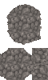

WEBTILED
Map editor for Rusted Warfare · .tmx format
1. Overview
WebTiled is a map editor for Rusted Warfare (the .tmx format). It replaces NotTiled and adds custom systems: Types, procedural generator, isometric 3D view, and map merging.
2. Main screen
Top bar
| Button | Action |
|---|---|
| 📂 Open | Open a .tmx file |
| 💾 Save | Save as .tmx (name from the field to the right) |
| ⤢ Size | Resize the map (W×H) |
| ⌘ Merge | Merge several maps (opens a modal window) |
| 📷 _map | Export the map to PNG 500×500 (keeps aspect ratio, empty space is black) |
| Fit | Fit the view to the window |
| 1:1 | Zoom 100% |
| Zoom | Current zoom level |
| ⚙ | Settings |
| ? | Help |
Left toolbar
| Tool | Hotkey | Action |
|---|---|---|
| PAN | P | Move the view |
| BRUSH | B | Paint tiles from the brush group |
| TERRAIN | T | Paint with a type (Solids from Types) |
| CLS | C | Classic corner-autotile using a terrain mask |
| ERASE | E | Erase (tile = 0) |
| RECT | R | Rectangular fill |
| FILL | F | Flood fill |
| PICK | I | Eyedropper (pick the tile under the cursor) |
| AUTO | — | Autotile an area via Types / Generator |
| UNDO | Ctrl+Z | Undo |
| REDO | Ctrl+Y | Redo |
Right panel
LAYERS — list of layers:
- checkbox — visibility
- click — set active
- ▲ ▼ — move up / down
- C — clear (erase all tiles)
- × — delete layer
- S — solo (only this layer)
- double-click on the name — rename
BRUSH — a group of tiles:
- +EMPTY — add emptiness to the group
- FLOOD — fill with the dominant type (≥3 orthogonal neighbours)
- CLEAR — clear the group
- Size — brush radius
- Shape — square / circle / diamond
- List of tiles with weights
- CLASSIC TERRAIN — terrain selection for the CLS tool
Bottom panel
Four tabs (each can be toggled independently):
- ATLASES — all tilesets of the map
- TYPES — the type system
- GENERATOR — procedural generator
- 3D — isometric view
The ▼ button collapses the whole panel. The grabber at the top is used for manual resizing.
3. Atlases
For each tileset:
- A tab with the name + × (delete tileset)
- + Tileset — add a new tileset from a PNG
Inside a tileset:
- Zoom — 1×–8× (mouse wheel)
- Edit — edit a tile (terrain + properties)
- Show IDs — show / hide tile numbers
- ▶ Terrain — terrain types editor
Shift + click — add to the brush.
4. Types
A type system for autotiling by priority — not by terrain, but by semantics (Dirt, Water, Cliff, ...).
Each type contains:
- Name + Priority + Color
- Solids — list of solid tiles with weights (random selection when painting)
- Edges — 4 sides + 4 outer corners (N, E, S, W, NWo, NEo, SWo, SEo)
- Inner — 4 inner corners (NWi, NEi, SWi, SEi)
How it works
When painting with the TERRAIN tool, a cell gets one of the solids of the type. When the brush is released, the Generator recalculates the Items0 layer: around cells of type A that border type B (with a higher priority), edge tiles of type B are drawn.
Rules
- Priority determines whose edge wins on a border. A higher priority → the edge is drawn outside the type, on the cells of the lower-priority neighbours.
- Solids have weights; a tile is chosen randomly (so a tile can be variable).
- Edge roles:
N / S / E / W— straight sidesNWo / NEo / SWo / SEo— outer corners (the type wraps into a corner)NWi / NEi / SWi / SEi— inner corners (a hole in the type)
Buttons
- + type — create a new one
- 📦 Import MiniTNS — import a 3×5 tile PNG → a new tileset + a new type (all 12 edges + 3 solids are filled automatically)
- × on the type card — delete
Pick mode
Click on an edge/solid slot → pick mode. Choose a tile in the atlases. Clicking the same slot again clears it.
5. Classic autotile (CLS tool)
Different from Types. Works with the terrain mask of a tileset (classic corner-autotile like in Tiled).
[TL, TR, BL, BR] (not TL, TR, BR, BL).
How it works
- Choose a tileset + terrain in the CLASSIC TERRAIN selector (in the BRUSH panel).
- Paint on the active layer.
- Each cell receives the solid tile of the chosen terrain.
- When the brush is released, the masks are recalculated for all painted cells + 8 neighbours.
Corner logic
For a cell (x,y), the mask consists of 4 corners from the perspective of neighbours:
TL = NW.BR && N.BL && W.TR (all three = target → corner is target)
TR = N.BR && NE.BL && E.TL
BL = W.BR && SW.TR && S.TL
BR = E.BL && SE.TL && S.TRFallback (if the exact mask is missing): from maximum to minimum (4 substitutions → 3 → 2 → 1). A single cell lands directly in the solid.
Undo
A single Ctrl+Z rolls back the entire stroke at once (activeLayer, Items0, everything).
6. FLOOD (type brush)
The FLOOD button in the BRUSH panel.
For each Ground cell, its 4 orthogonal neighbours are checked:
- If 3+ neighbours share the same type B
- And B.priority > A.priority (the cell's type)
- → the cell is repainted to tile B (the most frequent ID among those 3+ neighbours is used)
Does not cascade in one pass — it works on a snapshot. If new “3-surrounded” cells appeared after the repaint — press FLOOD again.
One undo transaction.
7. Generator
A procedural heightmap generator.
Procedural generation
| Parameter | Action |
|---|---|
| WIDTH / HEIGHT | Map size (in tiles) |
| LEVELS | Number of height levels (usually 10) |
| FLATTEN BOTTOM | How many bottom levels to merge into a “floor” |
| NOISE SCALE | Perlin noise scale (larger = smoother) |
| OCTAVES | Number of fBm octaves |
| PLAYABLE % | Share of the “playable” plane |
| EDGE BIAS / CURVE | Raise / lower the edges |
| SYMMETRY | none / mirror X / mirror Y / rotate 180° / quad / diag / anti-diag |
| SYM STRENGTH | Symmetry strength (0–1) |
| PASSES / PASS W / PASS LEN | Carve “paths” along plateau borders |
| SEED | Generator seed |
Buttons:
- GENERATE — generate
- RANDOM SEED — random seed
PNG Import
📂 Choose file — load a PNG as a base. Brightness = height (dark → top, light → bottom). The PNG size becomes the map size.
Rivers
- ENABLE — draw rivers
- SMOOTH — valley smoothing depth
- + AUTO RIVER — add a random S-shaped river
- CLEAR — erase all
Auto Points
Auto-generation of starts and respools:
- PLAYERS — how many teams
- HOME / PLAYER — respools at the start
- FRONT PTS — respools on the front
- SPREAD — minimum distance between starts
- EDGE MARGIN % — margin from the edges
- HEIGHT MARGIN — how high the terrain can be for the points
GENERATE POINTS — create. CLEAR — erase.
Preview
A 256×256 PNG preview of the current heightmap + start markers (green/red) and respools (yellow).
Apply to Map
- TARGET LAYER — where to write solids (default
Ground) - EDGE LAYER — where to write edges (default
Items0) - APPLY — apply
The level → typeId mapping is done automatically by priority (level 0 = peak → the type with the max priority, level N-1 = floor → the one with the min).
8. 3D view
An isometric 3D view of the map.
Source
- HEIGHT SOURCE:
Generator / PNG— heights from the generator's heightmapGround layer— heights from the Ground tiles
- COLOR MODE:
Map texture (screenshot)— color from the current map render (composited with alpha)Classic palette— blue water / green grass / grey mountainsGrayscale— greyImported PNG file— an arbitrary PNG
Parameters
- CELL — cell size in pixels
- HEIGHT PX — terrain height
Buttons
- RENDER 3D — render (no auto-render, press manually)
- DOWNLOAD PNG — download the result
Markers in 3D
If markers are enabled (in settings) and the heightmap size equals the map size — the markers will be drawn over the 3D view.
9. Merge (map merging)
A modal window for merging several .tmx maps.
How it works
- + ADD MAP — choose one or several
.tmxfiles (can be a whole batch at once). - Each map is a rectangle with a mini-preview in the window on the left.
- Drag with the mouse — move the maps.
- Snap to the faces of other maps (pink guide lines) — if the SNAP checkbox is on.
- Intersections are highlighted with a red frame. Allowed, but on merge the topmost one in the priority list wins.
- ▲ ▼ in the list on the right — change the priority.
- × — remove a map.
- MERGE — merge. On OK, the current map in the editor is replaced.
Controls
- Mouse wheel — zoom (10%–400%)
- Click on empty space — pan
- Middle button — pan anywhere
- Click on a map — drag the map
- FIT — fit everything
What happens
- Bounding box = from the top-left to the bottom-right corner.
- Empty gaps → Ground = 0 → these are “holes” (a counter in the footer).
- Tilesets are merged by
name + fingerprint(PNG). If they match → one, all IDs are remapped. - Name conflict →
Name_2,Name_3, ... - Layers — union, order from the first map,
Itemsat the end. - Overlap → the map with the higher priority wins.
- Types config — from the first map, IDs are remapped.
10. Settings
Opened via ⚙ in the top bar.
| Parameter | Action |
|---|---|
| LANGUAGE | English / Русский. Default — English. |
| Canvas background | Background color under the map on the canvas |
| Show markers | Show markers (starts/respools) in 2D and 3D |
| Marker size | Marker size multiplier (0.3×–3.0×) |
APPLY — save. CANCEL — cancel (reverts to the state at the moment of opening).
Settings are stored in localStorage and survive a page reload.
11. Markers (starts and respools)
Recognition
Searches across all layers of the map for tiles with the properties:
res_pool(no value) → respoolteam=N+unit="commandCenter"→ start of team N
Appearance
- Start: a black semi-transparent circle (alpha 50%) with the team number inside. The digit is the player's color. Font — Arial Black.
- Respool: a yellow dot with a black outline.
Team colors
Cycles through the 10 base RW colors:
0,10,20,30 → green
1,11,21,31 → red
2,12,22,32 → blue
3,13,23,33 → yellow
4,14,24,34 → purple
5,15,25,35 → cyan
6,16,26,36 → orange
7,17,27,37 → pink
8,18,28,38 → lime
9,19,29,39 → violetSizes
- Start: circle_radius = 5 tiles
- Respool: dot_radius = 2.5 tiles
- Multiplier from settings (0.3×–3.0×)
- Digit = 80% of the circle diameter
_map export
When exporting a 500×500 PNG, the markers are stored in a readable form. On a reference map (500 px on the long side) start circles are ≈ 30 px, respool dots ≈ 16 px.
12. Working with layers
Adding
The + button in the header of the LAYERS panel. The layer is inserted before Items (the last service layer of RW).
Moving
- ▲ ▼ on each row — shift by one position.
- The layer order matches the order in the XML.
Deleting
- × on the row. Requires confirm.
- There are no protected layers — even
Ground,Units,Itemscan be deleted. - The data of a deleted layer is lost.
Clearing
- C on the row. Erases all tiles of the layer (all cells = 0), the layer remains.
- Requires confirm.
Renaming
- Double click on the layer name.
- Enter — save, Esc — cancel.
- For
Ground,Units,Items— an additional confirm (renaming breaks the generator / RW order).
13. Working with tilesets
Adding
The + Tileset button in the tileset tab area. Choose a PNG — the tileset is embedded into the map as embedded_png (base64).
Rules:
- The PNG size must be a multiple of tileW × tileH of the map.
- The tileset name is requested.
- firstgid = max ID of existing tilesets + 1.
MiniTNS import
The 📦 Import MiniTNS button in the TYPES panel. The PNG must be exactly 3×5 tiles:

1 2 3 NWo N NEo
4 5 6 W · E
7 8 9 SWo S SEo
A B 5 NWi NEi ·
C D 5 SWi SEi ·Where 5 are three solid tiles with equal weights. Everything is automatic: a new tileset + a new type with 12 edges + 3 solids.
Deleting
× to the right of the tileset tab. The confirm shows the number of usages. If the tile is used — all cells are erased (one undo transaction).
Edit tile
The Edit checkbox in the atlas. Click on a tile → form:
- Terrain mask — 4 numbers
[TL, TR, BL, BR] - Properties — arbitrary key-values
Terrain editor
The ▶ Terrain button. Manage the list of terraintypes: add / rename / change / delete.
Show IDs
Checkbox. Hides the tile number labels in the atlas.
14. Exporting the map to PNG (📷 _map)
What it does:
- Renders the whole map at native resolution (W×H × tileW/H).
- If markers are enabled — adds them.
- Compresses with aspect ratio preserved: long side = 500 px.
- Centers into a 500×500 PNG, empty space — black.
File name: <map_name>_map.png.
Usage: map preview for README, Discord, pack description.
15. Hotkeys
| Key | Action |
|---|---|
| B | Brush |
| T | Terrain |
| C | Classic autotile |
| E | Eraser |
| R | Rect |
| F | Fill |
| I | Picker |
| P | Pan |
| Ctrl+Z / Ctrl+Y | Undo / Redo |
| Ctrl+S | Save |
| Esc | Cancel pick mode |
16. Undo / Redo
- Stack of 50 actions.
- The TERRAIN and CLS brushes write in one transaction (both Ground and Items0) — one Ctrl+Z rolls back the whole stroke.
- All changes are written to undo, including:
- Painting with any brush
- Flood fill, Rect
- Tileset delete (tile erasing)
- Map resize
- Not undoable:
- Map merge (replaces mapModel)
- Add tileset
- Import MiniTNS
- Rename / add / remove layer
17. Map format
Layer structure (fixed)
Ground, Items0, Units, Items1, Items2, Items, (+ Items3+ if present)Ground— required, 1 item, firstUnits— 3rd layer, 1 itemItems— last, 1 item (mountains + respools + starts, all with collision)Items0/1/2/3— intermediate layers (transitions, junctions, decor)
Data format
base64 → zlib → Uint32Array Little Endian.
Empty layer = eJxjYA== (16 bytes: 4 zero uint32).
Tileset in .tmx
<properties><property name="embedded_png">base64</property></properties>— the atlas is embedded<terraintypes>— list of types<tile id="N" terrain="A,B,C,D">— terrain mask (order TL, TR, BL, BR!)<properties>on a tile — flags (water,res_pool,large-rock,team+unit)
Tile flags
large-rock— impassable at alllarge-cliff— passable only to mechs / expawater,water-bridge— waterres_pool— respool pointteam+unit="commandCenter"— player start (team 0–49)
18. Limitations and known quirks
- Layers are not reordered in the XML on save — the order comes from
layerOrder. - Autosave is disabled. Unsaved changes are lost on reload.
- Merge replaces the current map without undo. The confirm warns about this.
- There is no undo stack for tileset operations.
- Renaming
Ground/Units/Itemsis allowed, but breaks the generator and the RW order. - PNG export is always 500×500 with black fill for empty space.
19. Saving
Ctrl+S or the 💾 Save button. The name is taken from the field to the right of Save. If the extension is not .tmx — it is added automatically.
The file is saved via a browser download. The map contains:
- All layers in
layerOrder - All tilesets (untouched — as they were; modified — rebuilt)
types_configin the map properties (JSON with all types)
Opens in Rusted Warfare or Tiled.
WEBTILED
Редактор карт для Rusted Warfare · формат .tmx
1. Что это
WebTiled — редактор карт для Rusted Warfare (формат .tmx). Заменяет NotTiled, добавляет кастомные системы: Types, процедурный генератор, изометрический 3D-вид, склейку карт.
2. Главный экран
Верхняя панель
| Кнопка | Что делает |
|---|---|
| 📂 Open | Открыть файл .tmx |
| 💾 Save | Сохранить как .tmx (имя из поля правее) |
| ⤢ Size | Изменить размер карты (W×H) |
| ⌘ Merge | Склеить несколько карт (открывает модальное окно) |
| 📷 _map | Экспорт карты в PNG 500×500 (сохраняет пропорции, пустота — чёрная) |
| Fit | Подогнать вид под окно |
| 1:1 | Масштаб 100% |
| Zoom | Текущий масштаб |
| ⚙ | Настройки |
| ? | Помощь |
Левая панель инструментов
| Инструмент | Хоткей | Что делает |
|---|---|---|
| PAN | P | Двигать вид |
| BRUSH | B | Рисовать тайлами из brush-группы |
| TERRAIN | T | Рисовать типом (Solids из Types) |
| CLS | C | Classic corner-autotile по terrain-маске |
| ERASE | E | Стирать (tile = 0) |
| RECT | R | Прямоугольная заливка |
| FILL | F | Flood fill |
| PICK | I | Пипетка (взять тайл из-под курсора) |
| AUTO | — | Автотайл области через Types / Generator |
| UNDO | Ctrl+Z | Отменить |
| REDO | Ctrl+Y | Повторить |
Правая панель
LAYERS — список слоёв:
- чекбокс — видимость
- клик — сделать активным
- ▲ ▼ — переместить вверх / вниз
- C — очистить (стереть все тайлы)
- × — удалить слой
- S — solo (только этот слой)
- двойной клик по имени — переименовать
BRUSH — группа тайлов:
- +EMPTY — добавить пустоту в группу
- FLOOD — залить доминирующим типом (≥3 ортогональных соседа)
- CLEAR — очистить группу
- Size — радиус кисти
- Shape — square / circle / diamond
- Список тайлов с весами
- CLASSIC TERRAIN — выбор terrain для CLS-инструмента
Нижняя панель
Четыре вкладки (можно включать / выключать независимо):
- ATLASES — все tileset'ы карты
- TYPES — система типов
- GENERATOR — процедурный генератор
- 3D — изометрический вид
Кнопка ▼ — свернуть всю панель. Грэббер сверху — ручной ресайз.
3. Atlases (Атласы)
Для каждого tileset'а:
- Вкладка с именем + × (удалить tileset)
- + Tileset — добавить новый tileset из PNG
Внутри tileset'а:
- Zoom — 1×–8× (колесо мыши)
- Edit — редактировать tile (terrain + properties)
- Show IDs — показывать / скрывать номера тайлов
- ▶ Terrain — редактор terrain types
Shift + клик — добавить к brush.
4. Types (Типы)
Система типов для автотайла по приоритету — не по terrain, а по семантике (Dirt, Water, Cliff, ...).
Каждый тип содержит:
- Имя + Priority + Цвет
- Solids — список solid-тайлов с весами (случайный выбор при рисовании)
- Edges — 4 стороны + 4 внешних угла (N, E, S, W, NWo, NEo, SWo, SEo)
- Inner — 4 внутренних угла (NWi, NEi, SWi, SEi)
Как работает
При рисовании инструментом TERRAIN — клетка получает один из solids типа. При отпускании кисти Generator пересчитывает слой Items0: вокруг клеток типа A, граничащих с типом B (с более высоким приоритетом), рисуются edge-тайлы типа B.
Правила
- Приоритет определяет, чей edge победит на границе. Больший priority → edge рисуется вне типа, на клетках соседей с меньшим приоритетом.
- Solids — с весами, выбирается случайно (можно сделать tile вариативным).
- Edge-роли:
N / S / E / W— прямые стороныNWo / NEo / SWo / SEo— внешние углы (тип заходит в угол)NWi / NEi / SWi / SEi— внутренние углы (дырка в типе)
Кнопки
- + тип — создать новый
- 📦 Import MiniTNS — импорт PNG 3×5 тайлов → новый tileset + новый тип (все 12 edges + 3 solids заполняются автоматически)
- × на карточке типа — удалить
Режим pick
Клик по слоту edge/solid → режим pick. В атласах выбираешь тайл. Повторный клик по тому же слоту — очистить.
5. Classic Autotile (инструмент CLS)
Отличается от Types. Работает по terrain-маске tileset'а (классический corner-autotile как в Tiled).
[TL, TR, BL, BR] (не TL,TR,BR,BL).
Как работает
- Выбираешь tileset + terrain в CLASSIC TERRAIN селекторе (в панели BRUSH).
- Рисуешь на активном слое.
- Каждая клетка получает solid-тайл выбранного terrain.
- После отпускания кисти — пересчёт масок для всех нарисованных клеток + 8 соседей.
Corner logic
Для клетки (x,y) маска = 4 угла из perspective соседей:
TL = NW.BR && N.BL && W.TR (все три = target → угол target)
TR = N.BR && NE.BL && E.TL
BL = W.BR && SW.TR && S.TL
BR = E.BL && SE.TL && S.TRFallback (если точной маски нет): от максимума к минимуму (4 замены → 3 → 2 → 1). Одиночная клетка попадает сразу в solid.
Undo
Один Ctrl+Z откатывает весь штрих целиком (и activeLayer, и Items0, и всё остальное).
6. FLOOD (кисть типов)
Кнопка FLOOD в панели BRUSH.
Для каждой клетки Ground проверяет её 4 ортогональных соседа:
- Если 3+ соседа одного и того же типа B
- И B.priority > A.priority (тип клетки)
- → клетка перекрашивается в тайл B (берётся самый частый ID среди этих 3+ соседей)
Не каскадится за один проход — работает по снапшоту. Если после перекраски появились новые «3-окружённые» клетки — жми FLOOD ещё раз.
Одна транзакция undo.
7. Generator (Генератор)
Процедурный генератор heightmap'а.
Процедурная генерация
| Параметр | Что делает |
|---|---|
| WIDTH / HEIGHT | Размер карты (в тайлах) |
| LEVELS | Количество уровней высот (обычно 10) |
| FLATTEN BOTTOM | Сколько нижних уровней объединить в «пол» |
| NOISE SCALE | Масштаб шума Перлина (больше = плавнее) |
| OCTAVES | Количество октав fBm |
| PLAYABLE % | Доля «игровой» плоскости |
| EDGE BIAS / CURVE | Приподнять/опустить края |
| SYMMETRY | Симметрия: none / mirror X / mirror Y / rotate 180° / quad / diag / anti-diag |
| SYM STRENGTH | Сила симметрии (0–1) |
| PASSES / PASS W / PASS LEN | Резка «троп» по границам плато |
| SEED | Сид генератора |
Кнопки:
- GENERATE — сгенерировать
- RANDOM SEED — случайный сид
PNG Import
📂 Выбрать файл — загрузить PNG как основу. Яркость = высота (тёмное → верх, светлое → низ). Размер PNG становится размером карты.
Rivers
- ENABLE — рисовать реки
- SMOOTH — глубина сглаживания долины
- + AUTO RIVER — добавить случайную S-образную реку
- CLEAR — стереть все
Auto Points
Авто-генерация стартов и respools:
- PLAYERS — сколько команд
- HOME / PLAYER — respools у старта
- FRONT PTS — respools на фронте
- SPREAD — минимальная дистанция между стартами
- EDGE MARGIN % — отступ от краёв
- HEIGHT MARGIN — насколько высокий рельеф допустим для точек
GENERATE POINTS — создать. CLEAR — стереть.
Preview
256×256 PNG-preview текущего heightmap'а + маркеры стартов (зелёные/красные) и respools (жёлтые).
Apply to Map
- TARGET LAYER — куда писать solids (по умолчанию
Ground) - EDGE LAYER — куда писать edges (по умолчанию
Items0) - APPLY — применить
Маппинг level → typeId — автоматически по приоритету (level 0 = peak → тип с максимальным priority, level N-1 = floor → с минимальным).
8. 3D View
Изометрический 3D-вид карты.
Source
- HEIGHT SOURCE:
Generator / PNG— высоты из heightmap'а генератораGround layer— высоты из тайлов Ground
- COLOR MODE:
Map texture (screenshot)— цвет из текущего рендера карты (с композитингом по альфе)Classic palette— синяя вода / зелёная трава / серые горыGrayscale— серыйImported PNG file— произвольный PNG
Параметры
- CELL — размер клетки в пикселях
- HEIGHT PX — высота рельефа
Кнопки
- RENDER 3D — отрисовать (не авто-рендер, жми вручную)
- DOWNLOAD PNG — скачать результат
Markers в 3D
Если включены маркеры (в настройках) и размеры heightmap'а = размерам карты — маркеры отрисуются поверх 3D.
9. Merge (Склейка карт)
Модальное окно для склейки нескольких .tmx карт.
Как работает
- + ADD MAP — выбрать одну или несколько
.tmx(можно сразу пачкой). - Каждая карта — прямоугольник с мини-превью в окне слева.
- Тащить мышью — двигать карты.
- Снап к граням других карт (розовые линии-гайды) — если включён чекбокс SNAP.
- Пересечения подсвечиваются красной рамкой. Разрешены, но при merge побеждает верхняя в списке приоритета.
- ▲ ▼ в списке справа — изменить приоритет.
- × — удалить карту.
- MERGE — склеить. По OK текущая карта в редакторе заменяется.
Управление
- Колесо мыши — зум (10%–400%)
- Клик по пустому месту — pan
- Средняя кнопка — pan в любом месте
- Клик по карте — drag карты
- FIT — подогнать под всё
Что происходит
- Bounding box = от верхнего-левого до нижнего-правого угла.
- Пустые промежутки → Ground = 0 → это «дырки» (счётчик в футере).
- Tilesets объединяются по
name + fingerprint(PNG). Совпадают → один, все ID ремапятся. - Конфликт имени →
Name_2,Name_3, ... - Слои — union, порядок из первой карты,
Itemsв конец. - Overlap → побеждает карта с большим приоритетом.
- Types config — из первой карты, ID ремапятся.
10. Settings (Настройки)
Открывается через ⚙ в топбаре.
| Параметр | Что делает |
|---|---|
| LANGUAGE | English / Русский. Дефолт — English. |
| Canvas background | Цвет фона под картой на канвасе |
| Show markers | Показывать маркеры (старты/respools) на 2D и в 3D |
| Marker size | Множитель размера маркеров (0.3×–3.0×) |
APPLY — сохранить. CANCEL — отменить (вернёт состояние на момент открытия).
Настройки сохраняются в localStorage и переживают перезагрузку страницы.
11. Markers (Старты и Respools)
Распознавание
Ищет по всем слоям карты тайлы с properties:
res_pool(без значения) → respoolteam=N+unit="commandCenter"→ старт команды N
Внешний вид
- Старт: чёрный полупрозрачный круг (alpha 50%) с цифрой команды внутри. Цифра — цвет игрока. Шрифт — Arial Black.
- Respool: жёлтая точка с чёрной обводкой.
Цвета команд
Цикл по 10 базовым цветам RW:
0,10,20,30 → green
1,11,21,31 → red
2,12,22,32 → blue
3,13,23,33 → yellow
4,14,24,34 → purple
5,15,25,35 → cyan
6,16,26,36 → orange
7,17,27,37 → pink
8,18,28,38 → lime
9,19,29,39 → violetРазмеры
- Старт: circle_radius = 5 тайлов
- Respool: dot_radius = 2.5 тайла
- Множитель из настроек (0.3×–3.0×)
- Цифра = 80% от диаметра круга
Экспорт _map
При экспорте PNG 500×500 маркеры сохраняются в читаемом виде. На карте-эталоне (500px длинная сторона) круги стартов ≈ 30px, respool-точки ≈ 16px.
12. Работа со слоями
Добавление
Кнопка + в шапке панели LAYERS. Слой вставляется перед Items (последний служебный слой RW).
Перемещение
- ▲ ▼ на каждой строке — сдвиг на одну позицию.
- Порядок слоёв соответствует порядку в XML.
Удаление
- × на строке. Требует confirm.
- Защищённых слоёв нет — можно удалить даже
Ground,Units,Items. - Данные удалённого слоя теряются.
Очистка
- C на строке. Стирает все тайлы слоя (все клетки = 0), слой остаётся.
- Требует confirm.
Переименование
- Двойной клик по имени слоя.
- Enter — сохранить, Esc — отменить.
- Для
Ground,Units,Items— дополнительный confirm (переименование сломает генератор/RW-порядок).
13. Работа с tileset'ами
Добавление
Кнопка + Tileset в области вкладок tileset'ов. Выбираешь PNG — tileset встраивается в карту как embedded_png (base64).
Правила:
- Размер PNG должен быть кратен tileW × tileH карты.
- Имя tileset'а запрашивается.
- firstgid = максимальный ID существующих tileset'ов + 1.
Импорт MiniTNS
Кнопка 📦 Import MiniTNS в панели TYPES. PNG ровно 3×5 тайлов:
1 2 3 NWo N NEo
4 5 6 W · E
7 8 9 SWo S SEo
A B 5 NWi NEi ·
C D 5 SWi SEi ·Где 5 — три solid-тайла с равными весами. Всё автоматически: новый tileset + новый тип с 12 edges + 3 solids.
Удаление
× справа от вкладки tileset'а. Confirm показывает количество использований. Если tile используется — все клетки стираются (одна undo-транзакция).
Edit tile
Чекбокс Edit в атласе. Клик по тайлу → форма:
- Terrain mask — 4 числа
[TL, TR, BL, BR] - Properties — произвольные ключ-значения
Terrain editor
Кнопка ▶ Terrain. Управление списком terraintypes: add/rename/change/delete.
Show IDs
Чекбокс. Скрывает подписи номеров тайлов на атласе.
14. Экспорт карты в PNG (📷 _map)
Что делает:
- Рендерит всю карту в нативном разрешении (W×H × tileW/H).
- Если маркеры включены — добавляет их.
- Сжимает с сохранением пропорций: длинная сторона = 500px.
- Центрирует в PNG 500×500, пустое место — чёрное.
Имя файла: <имя_карты>_map.png.
Использование: превью карты для README, Discord, описания пака.
15. Горячие клавиши
| Клавиша | Действие |
|---|---|
| B | Brush |
| T | Terrain |
| C | Classic autotile |
| E | Eraser |
| R | Rect |
| F | Fill |
| I | Picker |
| P | Pan |
| Ctrl+Z / Ctrl+Y | Undo / Redo |
| Ctrl+S | Save |
| Esc | Отмена режима pick |
16. Undo / Redo
- Стек на 50 действий.
- Кисти TERRAIN и CLS пишут одной транзакцией (и Ground, и Items0) — один Ctrl+Z откатывает весь штрих.
- Все изменения пишутся в undo, включая:
- Рисование любой кистью
- Flood fill, Rect
- Tileset delete (стирание тайлов)
- Resize карты
- Не отменяется:
- Merge карт (заменяет mapModel)
- Add tileset
- Import MiniTNS
- Rename / add / remove layer
17. Формат карты
Структура слоёв (жёстко)
Ground, Items0, Units, Items1, Items2, Items, (+ Items3+ если есть)Ground— обязателен, 1 штука, первыйUnits— 3-й слой, 1 штукаItems— последний, 1 штука (горы + респулы + старты, всё с коллизией)Items0/1/2/3— промежуточные слои (переходы, стыки, декор)
Формат данных
base64 → zlib → Uint32Array Little Endian.
Пустой слой = eJxjYA== (16 байт: 4 нулевых uint32).
Tileset в .tmx
<properties><property name="embedded_png">base64</property></properties>— атлас зашит<terraintypes>— список типов<tile id="N" terrain="A,B,C,D">— terrain маска (порядок TL, TR, BL, BR!)<properties>на тайле — флаги (water,res_pool,large-rock,team+unit)
Флаги тайлов
large-rock— непроходимо вообщеlarge-cliff— проходимо только мехам/экспамwater,water-bridge— водаres_pool— точка респулаteam+unit="commandCenter"— старт игрока (team 0–49)
18. Ограничения и известные особенности
- Слои не переставляются в XML при сохранении — порядок из
layerOrder. - Autosave отключён. Несохранённые правки теряются при перезагрузке.
- Merge заменяет текущую карту без undo. Confirm предупреждает.
- Undo стека для операций с tileset'ами нет.
- Переименование
Ground/Units/Itemsразрешено, но ломает генератор и RW-порядок. - Экспорт PNG всегда 500×500 с чёрной заливкой пустоты.
19. Сохранение
Ctrl+S или кнопка 💾 Save. Имя берётся из поля справа от Save. Если расширение не .tmx — добавляется автоматически.
Файл сохраняется через браузерный download. Карта содержит:
- Все слои в порядке
layerOrder - Все tileset'ы (нетронутые — как были, изменённые — пересобраны)
types_configв properties карты (JSON со всеми типами)
Открывается в Rusted Warfare или Tiled.